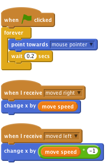

Scratch Card - Eyes
Level 4
forever block. Once green flag scripts have started we forever want our eyes to point in the direction of the mouse and re-adjust every fraction of a second.
Notice we also use broadcast to move our eyes along with our body and other parts. What else can you make the eyes do? If you move your mouse cursor between your monster’s eyes, it will go cross eyed!